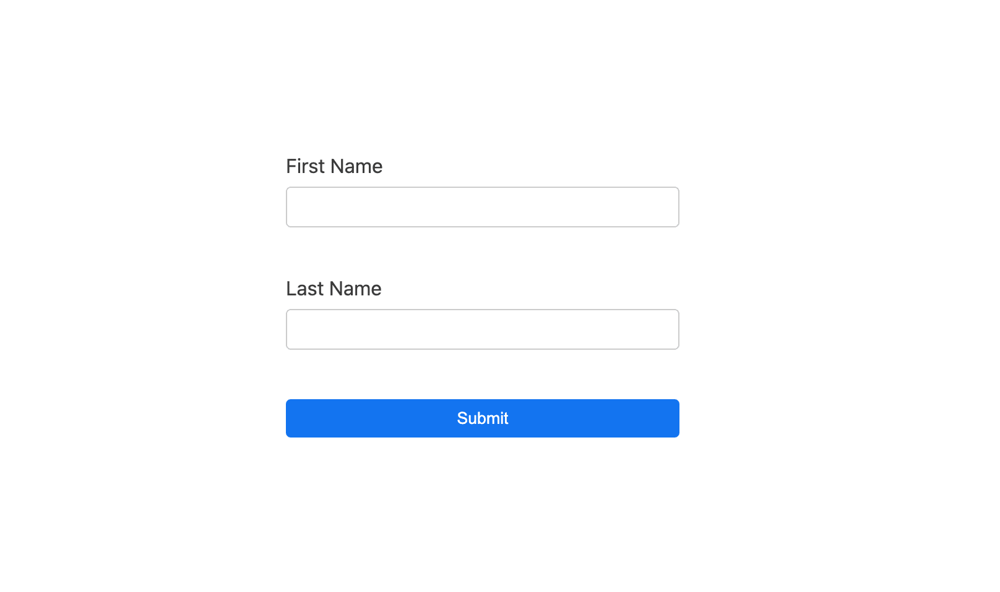

<!-- Style that form in order to look like that (top-left on the build index page) -->


<!DOCTYPE html>
<html lang="en">
  <head>
    <meta charset="UTF-8" />
    <meta http-equiv="X-UA-Compatible" content="IE=edge" />
    <meta name="viewport" content="width=device-width, initial-scale=1.0" />
    <link rel="stylesheet" href="./styles.css" />
    <title>Exercise2</title>
  </head>
  <body>
    <main>
      <form>
        <input type="text" name="name" />
        <input type="text" name="lastName" />
        <button type="submit">Submit</button>
      </form>
    </main>
  </body>
</html>
